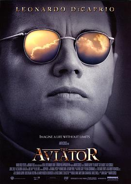

飞行家 / The Aviator
又名：娱乐大亨(港) / 神鬼玩家(台) / 飞行大亨 / 飞行者 / 休斯传
强大而脆弱的偏执狂
作品信息
| 导演 | 马丁·斯科塞斯 |
| 编剧 | 约翰·洛根 |
| 主演 | 莱昂纳多·迪卡普里奥 / 凯特·布兰切特 / 凯特·贝金赛尔 / 约翰·C·赖利 / 亚历克·鲍德温 / 阿伦·阿尔达 / 伊安·霍姆 / 丹尼·赫斯顿 / 格温·斯蒂芬妮 / 裘德·洛 / 亚当·斯科特 / 马特·罗斯 / 凯丽·加纳 / 弗兰西丝·康罗伊 / 布伦特·斯皮内 / 爱德华·赫曼 / 威廉·达福 / 肯尼斯·威尔什 / J·C·麦肯泽 / 雅各布·戴维奇 / 艾米·斯洛安 / 山姆·亨宁斯 / 乔·克里斯特 / 洛福斯·温莱特 Rufus Wainwright / 哈里·斯坦德乔夫斯基 / 文斯·佐丹奴 / 约希·麦兰 / Justin Shilton / 亚瑟·霍尔顿 / 约瑟夫·莱迪 / 伊夫·雅克 / 卢顿·万恩怀特三世 / 杰森·卡弗利尔 / Alan Toy / 弗朗切丝卡·斯科塞斯 / 乔·柯布登 / 艾伦·福西特 / 大卫·普鲁德汉姆 / 凯文·奥罗克 / 丽莎·布朗温·摩尔 / 艾玛·坎贝尔 / 玛莎·温赖特 / 维森特·拉雷斯卡 / 马特·霍兰德 / 丹尼斯·圣约翰 / 基思·坎贝尔 / 阿尔·范德克鲁斯 / James McNamara / Pascal Anctil / Matthew I. Baker / Gavin Black / John David Braddock / John Brody / 安妮·考特斯 / 埃尔·克罗内尔 / 马修·科贝特·戴维斯 / 安东内拉·埃莉亚 / 梅根伊丽莎白 / Brian Fortuna / Danielle Franke / Jess Graham / 特洛文·海斯 / Chase Hoyt / Jason Klamm / Lon Moriarty / Eddie Napolillo |
| 类型 | 剧情 / 传记 |
| 制片国家/地区 | 美国 / 德国 |
| 语言 | 英语 |
| 上映日期 | 2004-12-25(美国) |
| 片长 | 170 分钟 |
| IMDb | tt0338751 |
最后一次看到是 2026-08-12T21:13:07+08:00 · 豆瓣原页